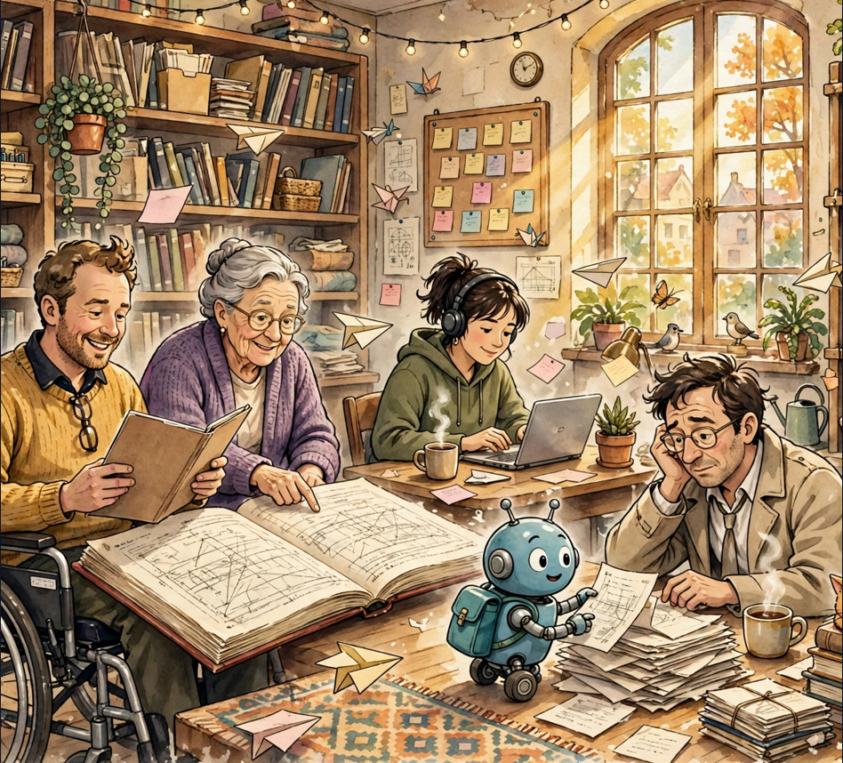

SOUND FAMILIAR?
Every office wants the story again. You tell it once. Then again. It wears you out.
When a thought won't finish, the task doesn't finish. That costs more than time. It costs self-esteem.
How many ideas died because the focus broke?
And AI adds to it: the grinding, the context wall, the confident wrong answer.

TALK TO US
Pilot it. Break it. Build with us. We're after people who will test memory that users own, and tell us where it fails.
We also host online peer sessions: people with disabilities talking about using AI as an assistive tool, and about the systems that feel hostile to us.
WHAT N.A.O. NEVER DOES
- Use your data against you
- Record anyone without their okay
- Lock your files in. They are plain files that open anywhere.

Scan to save our contact
Nathan NAO
nao.contributor@outlook.com
Neuro-Assistance Operating System
Tell your story once.
Never start from zero.

Durable memory for AI. Plain files you own. Any model you choose.
Built for neurodivergent minds, cognitive overload, and living with mental health distress.
Be righteous.
One next step at a time.